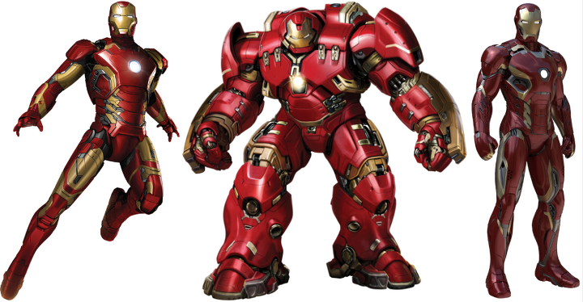
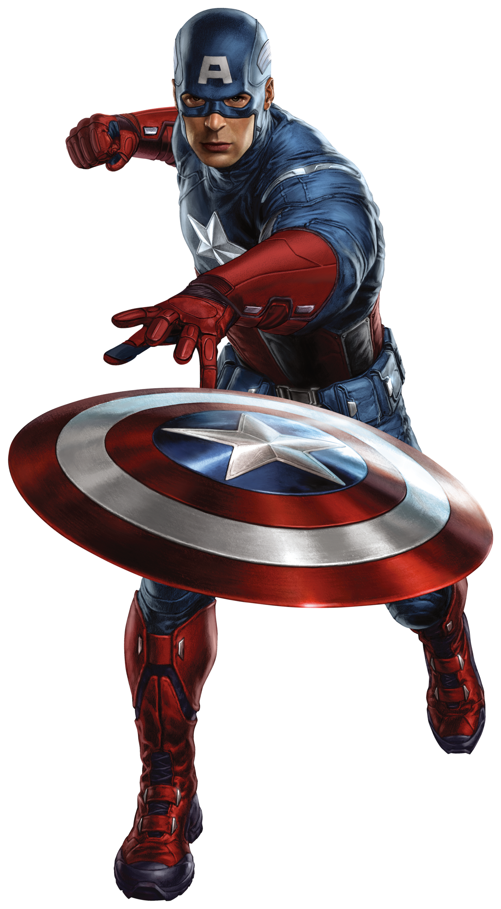
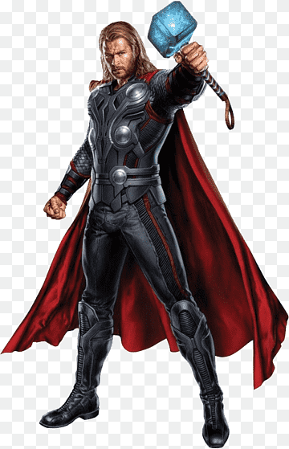

마블 3대 캐릭터
-
아이언맨
마블 시네마틱 유니버스의 아이언맨이자, 아이언맨 실사영화 시리즈의 주인공. 캡틴 아메리카와 함께 마블 시네마틱 유니버스 인피니티 사가의 메인 히어로이자 동시에 진 주인공이다.
-
캡틴 아메리카
마블 시네마틱 유니버스의 초대 캡틴 아메리카이자 캡틴 아메리카 실사영화 시리즈의 초대 주인공, 그리고 아이언맨과 함께 인피니티 사가의 주인공으로 MCU의 등장인물 중 아이언맨 다음으로 많은 인기를 자랑한다. 배역은 2005년 영화 《판타스틱 4》에서 휴먼 토치 역을 맡았던 크리스 에반스가 맡았다. 덕분에 팬들이 생각하는 선이 굵고 듬직한 이미지의 캡틴 아메리카보다는 다소 샤프한 미남의 이미지가 되었다.크리스 에반스는 인터뷰에서 "이름을 '캡틴 어스'나 '캡틴 저스티스'로 바꿔도 될 정도로 선하고 도덕적인 영웅이며, 미국 패권주의와는 거리를 두는 캐릭터가 될 것"이라고 밝혔다. 원작에서도 이런 캐릭터였지만[24], 원작을 잘 모르는 관객들을 위한 발언인 듯하다. 사실 미국의 영향력 및 미국에 대한 국제 사회의 지지도가 낮아진 개봉 당시 분위기를 반영한 것이 더욱 크다. 실제로 극중에서도 끊임없이 자유를 추구하고 권장하며 그에 따른 희생이나 책임 또한 스스로 감수하는 훌륭한 리더의 면모를 보여준다.
-
토르
지구를 비롯한 아홉 왕국의 평화와 생명을 수호하는 천둥의 신. 올 파더 오딘과 프리가의 맏아들이다. 형제로는 입양된 동생인 로키와 토르: 라그나로크에서 등장한 이복 누이가 있다. 하지만 현재 가족 중 자신만 살아있다. 토르 출생 이전, 정복군주였던 오딘과 헬라가 아홉 왕국을 정벌했을 때 오딘은 노인, 헬라는 중년 여성이었음에도 불구하고, 힘이 넘쳤었던 것을 보면, 세월을 살수록 강해지는 아스가르디언 특성 상 토르는 1,500년의 세월을 살았기 때문에 그들에 비해 약하다. 하지만 오딘의 혈통에 걸맞게, 초자연적인 힘을 사용한다..